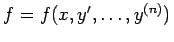

Inhalt Index DeskTop Bronstein

 Differentialgleichungen Gewöhnliche Differentialgleichungen Differentialgleichungen höherer Ordnung und Systeme von Differentialgleichungen Erniedrigung der Ordnung
Differentialgleichungen Gewöhnliche Differentialgleichungen Differentialgleichungen höherer Ordnung und Systeme von Differentialgleichungen Erniedrigung der Ordnung


, d.h., y tritt nicht explizit auf:
| (9.30a) |
Die Ordnung der Differentialgleichung kann durch die Substitution
| y' =p | (9.30b) |
| (9.30c) |
| Beispiel |
|
Die Ordnung der Differentialgleichung y''- xy'''+ (y''')3 = 0 wird durch die Substitution y''= p erniedrigt, so daß sich die CLAIRAUTsche Differentialgleichung mit der allgemeinen Lösung p = C1x + C13 ergibt. Daraus erhält man . Aus der singulären Lösung der CLAIRAUTschen Differentialgleichung erhält man die singuläre Lösung der zu lösenden Differentialgleichung. |